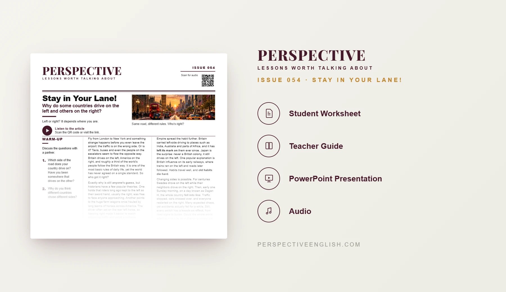

ISSUE 054
Stay in Your Lane! ESL Lesson
Why do some countries drive on the left and others on the right?
An advanced C1–C2 ESL discussion lesson exploring why countries drive on different sides of the road, historical theories, Japan’s left-side driving and Sweden’s dramatic Dagen H switch.
CHOOSE YOUR LEVEL
Also available in Collection 10, featuring Issues 051–055.

LESSON PREVIEW

ABOUT THIS LESSON
About This Stay in Your Lane! ESL Lesson
This advanced C1–C2 ESL lesson explores why Britain and Japan drive on the left while the United States drives on the right. Students examine competing historical theories, the influence of empire and the challenges of changing a familiar rule.
The article also examines Sweden’s Dagen H switch and its effects on traffic safety. Students consider how changing sides affects drivers, passengers, businesses and public budgets, then debate whether the world should adopt common standards.
In The Ripple Effect, students trace the consequences of a country switching from left-side to right-side driving. They then practice advanced expressions, stage a radio interview between a minister and a host, and debate whether shared global rules are worth the cost.
FROM THE ARTICLE
WHAT'S INCLUDED
What's Included in Stay in Your Lane!?
- Magazine-style C1–C2 ESL student worksheet
- Advanced reading and matching audio exploring left- and right-side driving, historical theories, Japan and Sweden’s Dagen H
- Five expressions: anyone’s guess, leave its mark on, old habits die hard, fall into line and a knock-on effect
- Five true-or-false questions assessing what the article states or implies
- Five discussion questions about driving abroad, everyday customs, changing habits and international standards
- The Ripple Effect: trace the first and subsequent consequences of changing a country’s driving side for five groups
- Language in Context: complete five sentences using the advanced expressions
- Speaking challenge: live radio interview between a transport minister and a host about costs, safety and changing road rules
- 200–250 word opinion-writing task on shared everyday rules versus national differences, addressing the strongest opposing view
- Teacher guide, complete answer key and model writing
- Ready-to-use classroom presentation
GET THE COMPLETE LESSON
Ready to Teach Stay in Your Lane!?
Get the complete Stay in Your Lane! ESL lesson individually, or get Issues 051–055 together in Collection 10.
Secure checkout and instant digital delivery through Payhip.